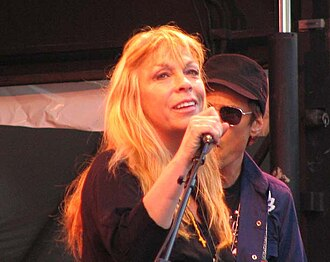

Rickie Lee Jones
Rickie Lee Jones is an American singer, musician, and songwriter. Over the course of a career that spans five decades and 15 studio albums, she has recorded in various musical styles including rock, R&B, pop, soul, and jazz. A two-time Grammy Award winner, Jones was listed at No. 30 on VH1's 100 Greatest Women in Rock & Roll in 1999. AllMusic stated: "Few singer/songwriters are as individual and eclectic as Rickie Lee Jones, a vocalist with an expressive and smoky instrument, and a composer who can weave jazz, folk, and R&B into songs with a distinct pop sensibility."
Complete Discography & Tracklists (25)
1979 Rickie Lee Jones 🎵 11 Tracks
1981 Pirates 🎵 8 Tracks
1984 The Magazine 🎵 10 Tracks
1989 Flying Cowboys 🎵 11 Tracks
1991 Pop Pop 🎵 12 Tracks
1993 Traffic From Paradise 🎵 10 Tracks
1995 Naked Songs Live And Acoustic 🎵 15 Tracks
2000 It's Like This 🎵 11 Tracks
2001 Live at Red Rocks 🎵 12 Tracks
2009 Balm in Gilead 🎵 10 Tracks
2009 Chuck E's In Love / On Saturday Afternoons In 1963 [Digital 45] 🎵 0 Tracks
No tracks registered.
2012 The Devil You Know 🎵 10 Tracks
2012 Original Album Series 🎵 25 Tracks
2012 Girl At Her Volcano 🎵 8 Tracks
2015 The Other Side of Desire 🎵 11 Tracks
2019 Kicks 🎵 10 Tracks
2019 Lonely People 🎵 0 Tracks
No tracks registered.